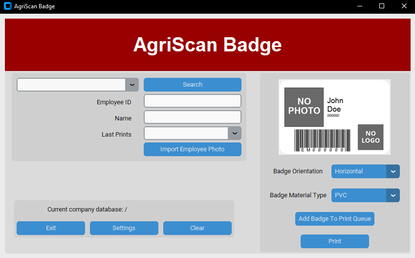
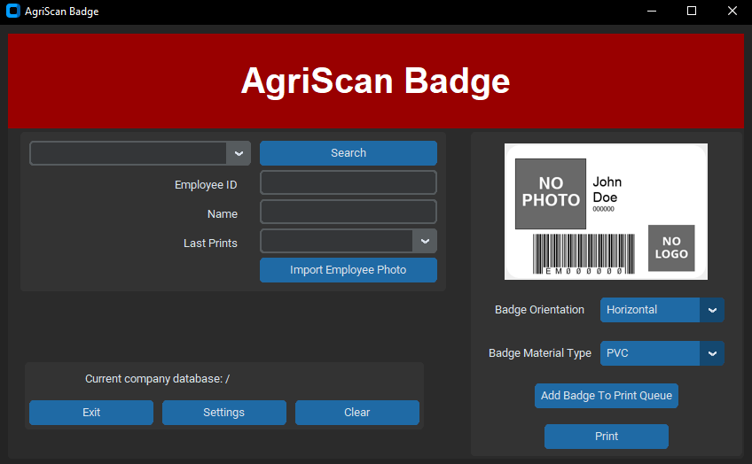

Projects
Senior Capstone Project
For my end-of-program project, I was asked to create an application from scratch with a group of other seniors. This project, called AgriScan Badge, would be used to create employee badges for agricultural workers and interface with legacy systems and software that are over 25 years old. The client for this application has requested to keep the repository private.
 StockViewer WebApp
StockViewer WebApp was an advanced software engineering group project that was used to look at and track stocks with candlestick charts. This project introduced me to working with APIs to get information from other sources online.
View Project